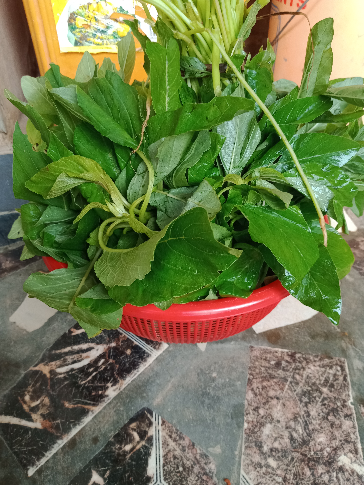
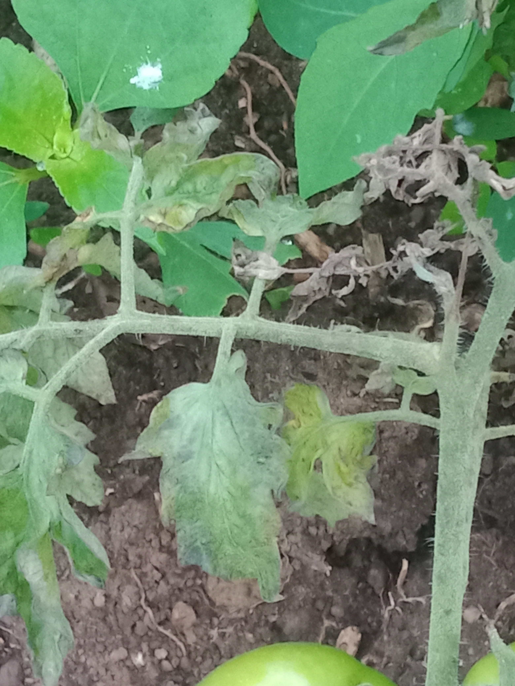
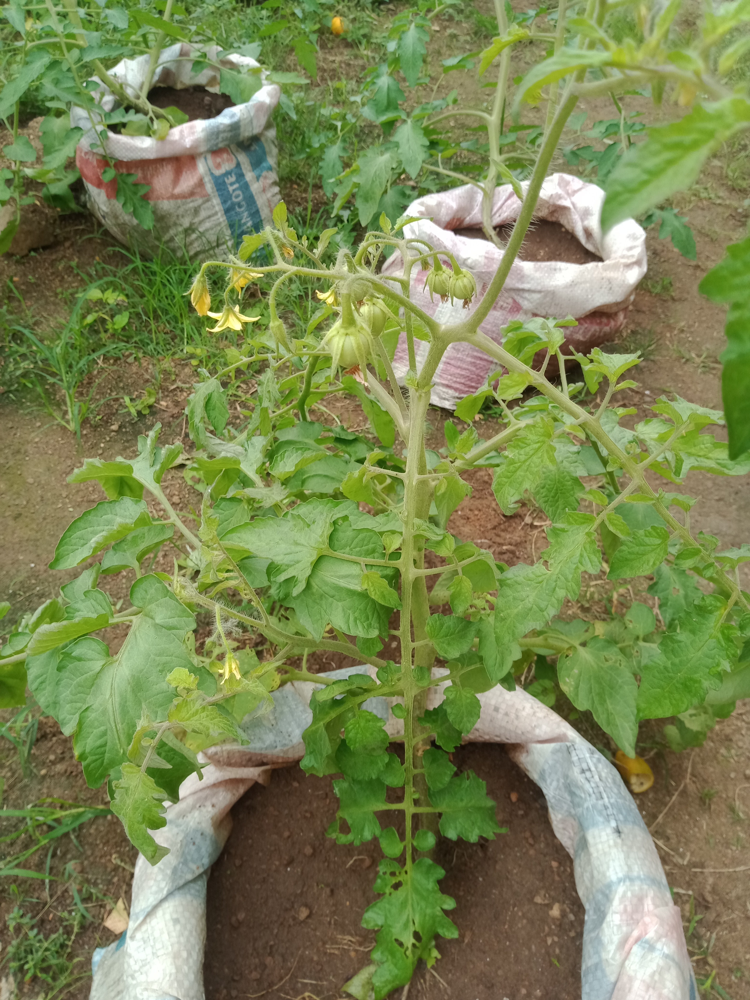
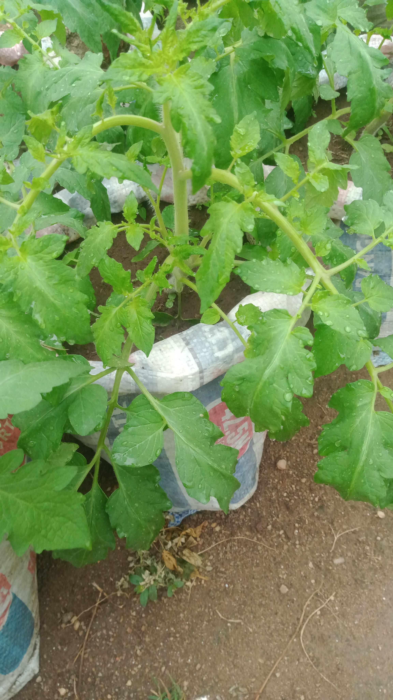
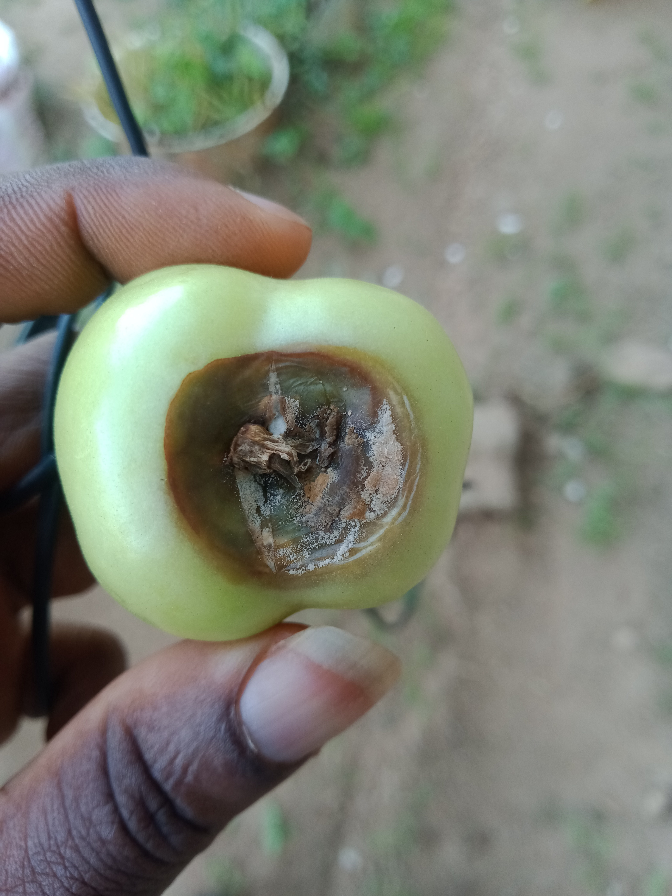
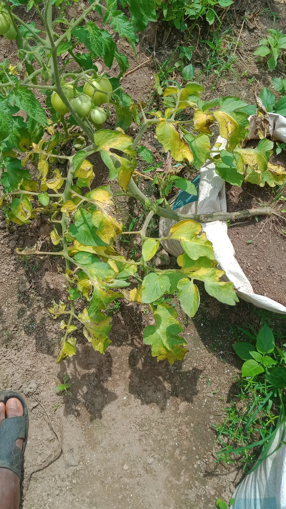
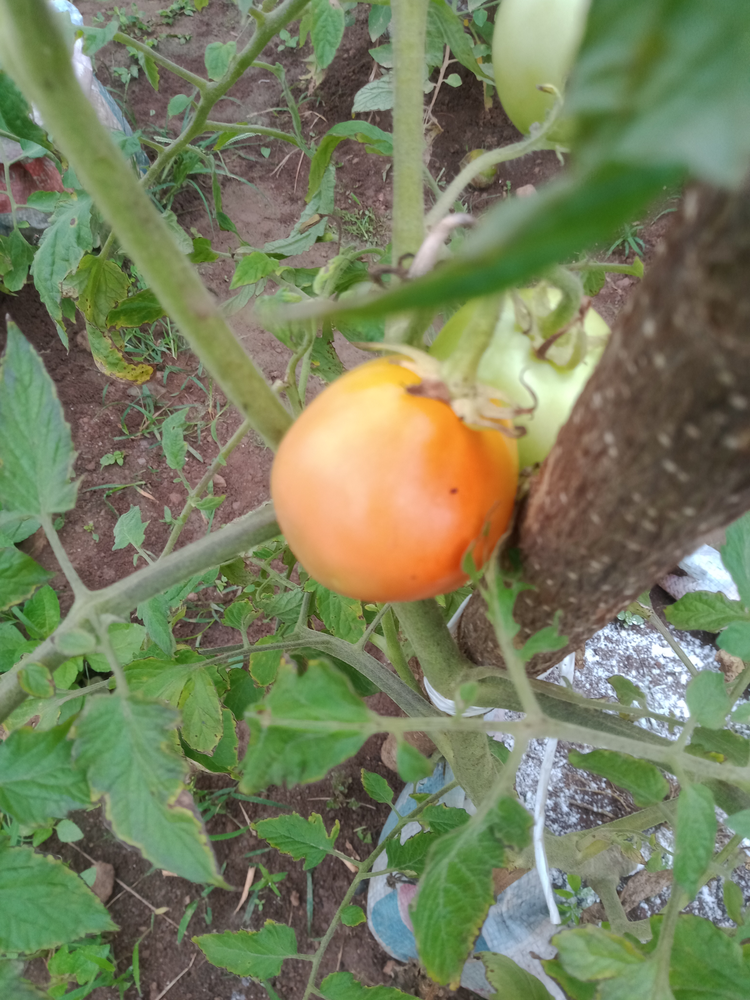
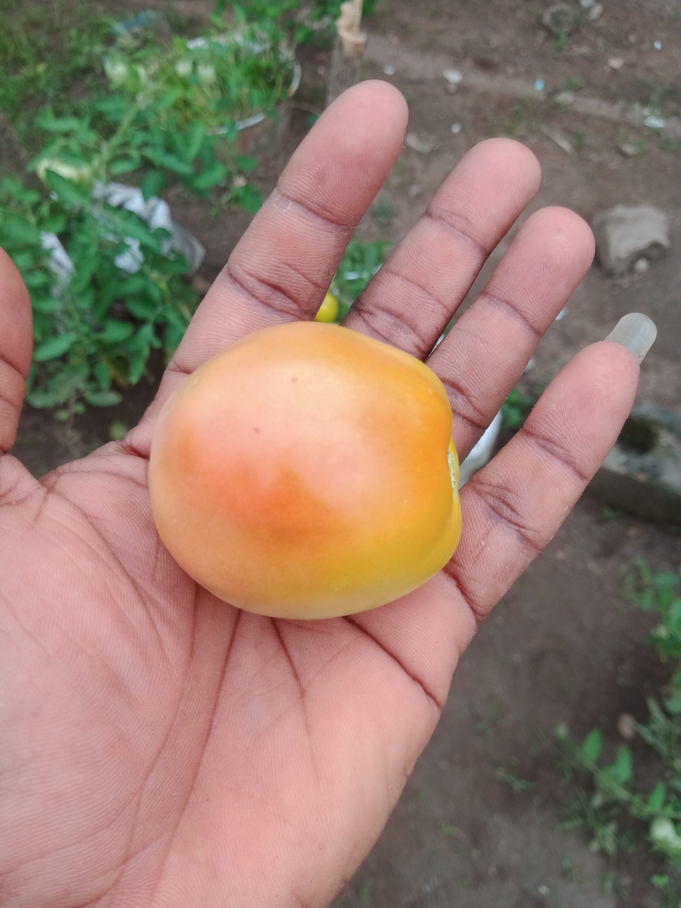
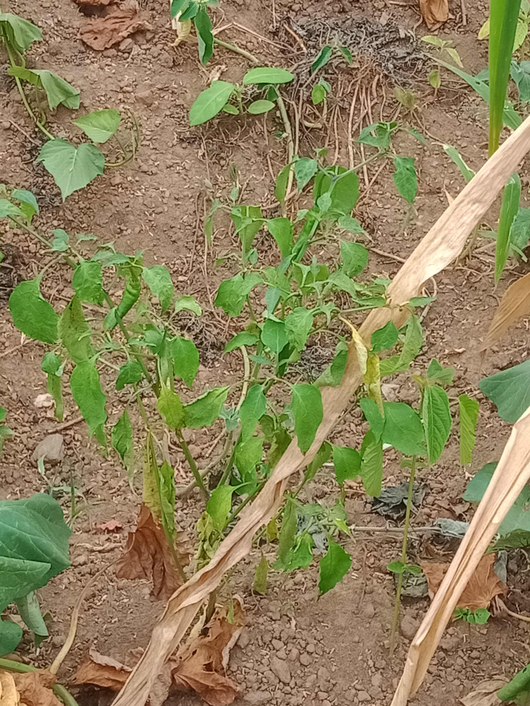
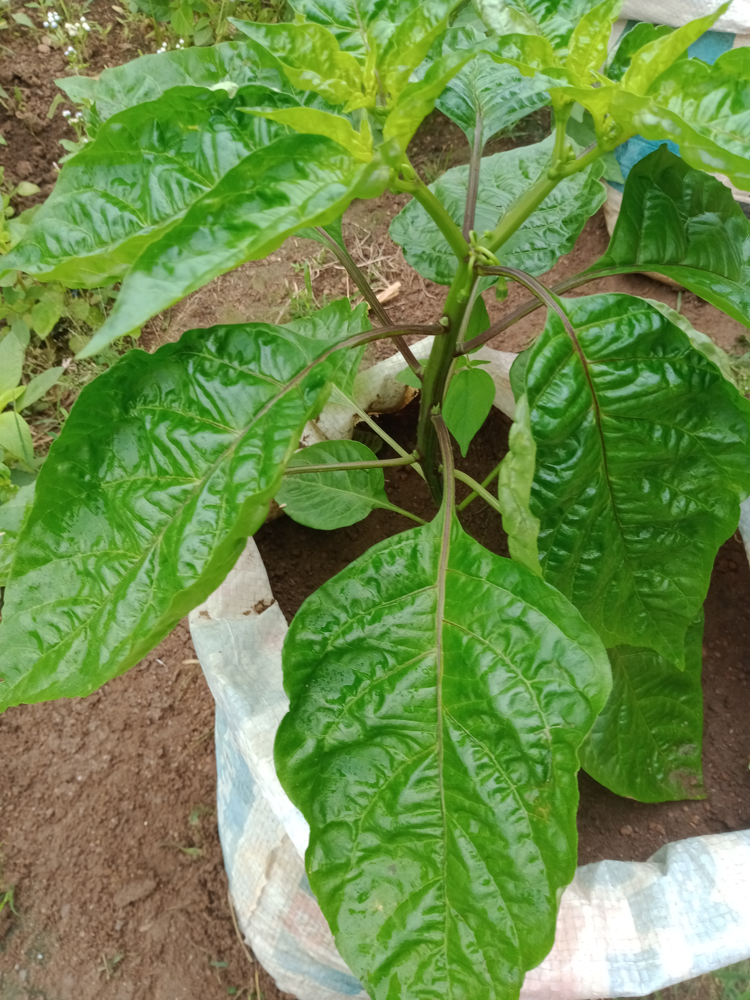

Chapter 2
Even though I had it in mind to plant some stuffs, starting was an issue. This became much easy when my dad can me visiting. Being such that he spent his youth farming on a large scale, I believe he still had it in him, he assisted in clearing the bushes and help with the ridges, all I had to so was start planting. This I didnt do until my neighbor who challenged me to farm came to plant okro, ewedu and efo. I just had to beg him for some seedlings and that was how my journey has a farmer started.










